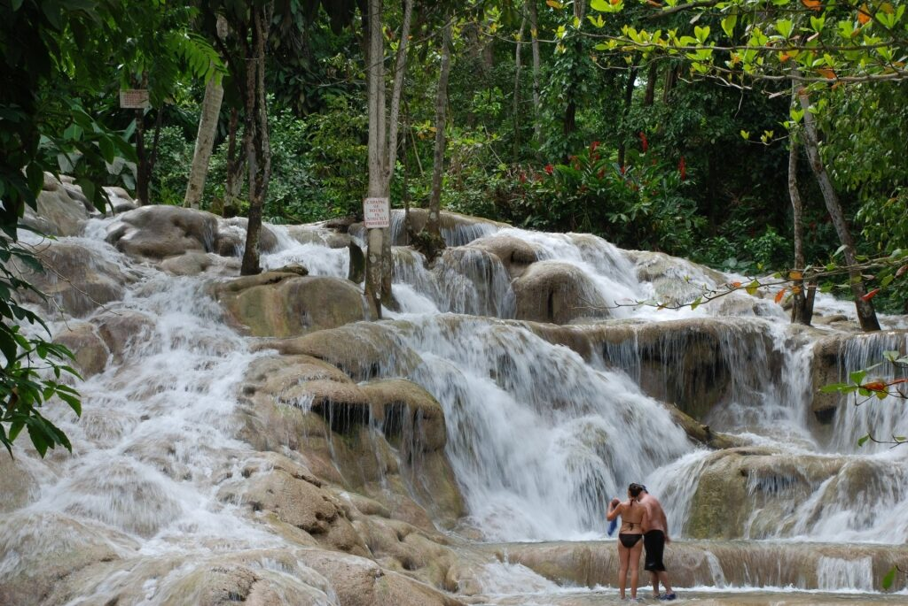

Things to Do
El Yunque National Forest
Explore Puerto Rico’s nature with an outdoor adventure at El Yunque National Forest. Discover the diverse ecosystem within the park, which is located only forty minutes from the city of San Juan.
Brimstone Hill Fortress

Step back in time with a trip to a well-preserved fortress in St. Kitts, one of the best Caribbean islands. The Brimstone Hill Fortress is a well-known UNESCO World Heritage site that delivers both alluring history and unbeatable views
Sapphire Beach
On the idyllic island of St. Thomas, witness the rich marine life that lies in the clear waters of Sapphire Beach. Embark on a snorkeling adventure straight from the soft white sands of this east coast beach, where snorkel gear is readily available to equip your underwater exploration.
Dunn’s River Falls
Outside of Ocho Rios, discover one of the most well-known natural attractions in Jamaica, the Dunn’s River Falls. An outdoor enthusiast’s waterfall haven, Dunn’s River Falls is a terraced cascade in the middle of a tropical paradise.
Dark View Falls

Uncover a dual waterfall treasure on the island of St. Vincent in the Grenadines. Embark on an enjoyable fifteen-minute hike and land in a tropical paradise, complete with thundering falls.